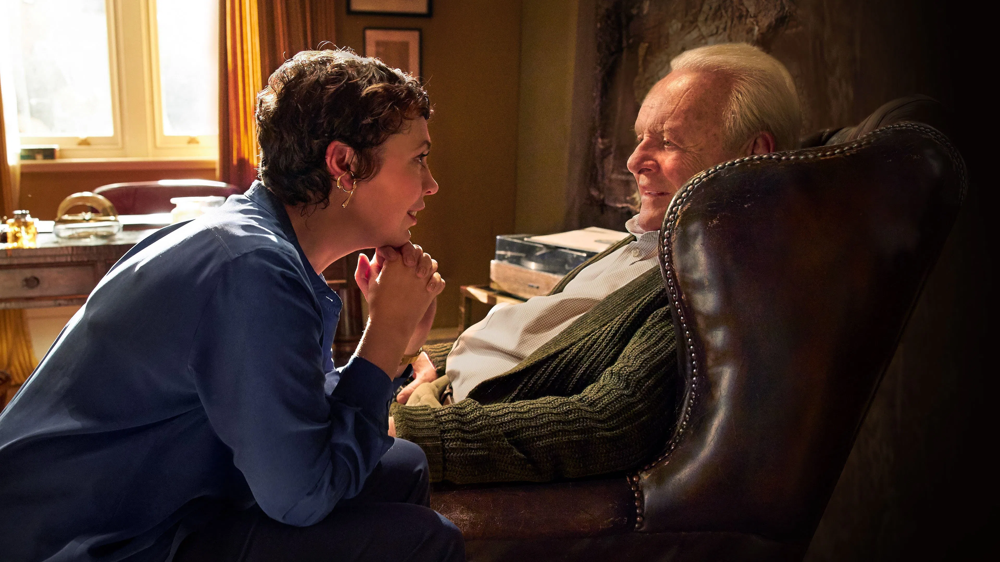

just an absolutely heartbreaking film from beginning to end. belongs in a very small group of movies that i don’t think i could bring myself to watch again. i really don’t know what else there is to say? anthony hopkins deserves the world.
Having scared off his latest caregiver, Anthony, an ailing octogenarian Londoner gradually succumbing to dementia, feels abandoned when his concerned daughter, Anne, tells him she's moving to Paris. Confused and upset, debilitated by his rapid mental decline and warped perspective, Anthony loses his grip on reality as he struggles to navigate the opaque landscape of the present and past. As a result, fading memories and glimpses of lucidity trigger sudden mood swings, distorting Anthony's surroundings, loved ones, and even time. But why has his younger daughter stopped visiting? And who are the strangers that burst in on Anthony?